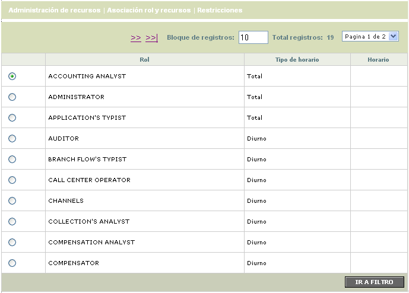
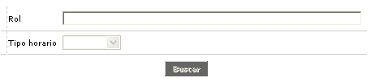
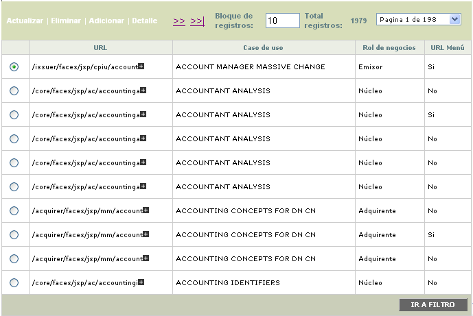
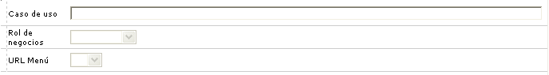
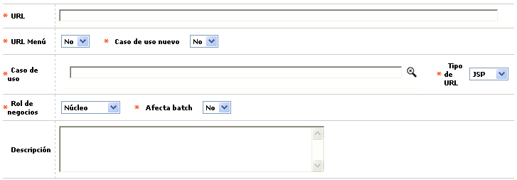
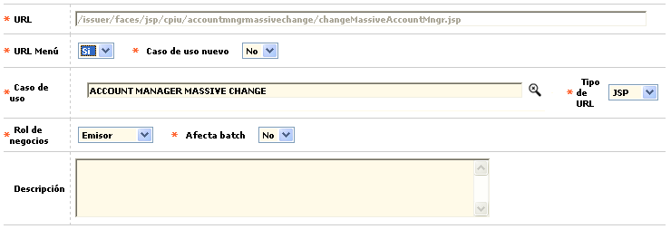
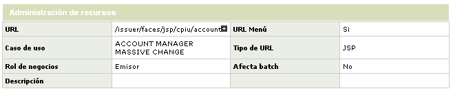

Autorización y restricción |
Mediante esta función se habilita la consulta de la tabla en la cual se almacenan los diferentes Roles de usuario definidos en el LDAP, con el Horario establecido para cada uno: Diurno, Nocturno o Total, definiendo la totalidad de las URL's del sistema para ser asociadas a cada rol, así como las Restricciones que cada uno de éstos tendrá al interactuar con el sistema.
El formulario contiene las opciones Administración de recursos, Asociación rol y recursos, y Restricciones. Adicionalmente cuenta con un filtro de búsqueda.

Filtro: Se pueden realizar consultas a través de las siguientes opciones:

Rol |
Campo alfanumérico de 30 posiciones, obligatorio, en el que se ingresa el nombre del rol que se desea consultar. La búsqueda se puede realizar acompañada del símbolo %. |
Tipo horario |
Para poder filtrar por el Tipo horario, el usuario puede seleccionar las opciones Diurno, Nocturno o Total. |
A través de este formulario, el sistema permite ingresar todas las URL que serán utilizadas y asociadas a cada uno de los roles a través de la opción de Asociación de rol y recursos. Las opciones del menú y los vínculos que haya dentro de ellas deben ser ingresados a través de cada URL correspondiente. Si éstas no están parametrizadas el sistema no permitirá el ingreso a la opción.
El formulario contiene las opciones Administración de recursos, Asociación rol y recursos, y Restricciones. Adicionalmente cuenta con un filtro de búsqueda.

Filtro: Se pueden realizar consultas a través de las siguientes opciones:

Caso de uso |
Campo que debe aceptar hasta 100 caracteres alfanuméricos. Se muestra sin lista de valores y acepta la búsqueda con el símbolo %. |
Rol de negocios |
Para poder filtrar por el Rol de negocios, el campo debe mostrar un combo con las siguientes opciones: Núcleo, Emisor, Adquirente, Débito, Servicios, y Cliente. |
URL Menú |
Para poder filtrar por el campo URL Menú, el campo debe mostrar un combo con las siguientes opciones: Sí, No, y nulo. |
Adicionar: Si el usuario invoca la opción Adicionar se despliega un formulario con los siguientes campos:

URL |
Este campo permite ser diligenciado con cualquier dato alfanumérico de máximo 250 caracteres y debe permitir mayúsculas y minúsculas. En él se indica la ubicación de cada uno de los formularios. |
URL menú |
El campo debe mostrar un combo con las siguientes opciones: Sí y No. En él se indica si el formulario de la URL se mostrará directamente desde el menú principal. |
Caso de uso nuevo |
A través de esta lista de valores de Sí y No, el sistema permite establecer si la URL ingresada corresponde o no a un nuevo caso de uso. |
Caso de uso |
Este campo depende de lo seleccionado en la lista anterior. Cuando en el campo 'Caso de uso nuevo' se selecciona 'No', este campo muestra lista de valores con todas las URL ingresadas en este mismo caso. Cuando está en 'Sí', acepta hasta 100 caracteres alfanuméricos y no habilita la lista de valores. |
Tipo de URL |
El campo muestra un combo con las siguientes opciones (JSP, JAVA, XML, WSL). |
Rol de negocios |
Este campo contiene lista de valores con las siguientes opciones (Núcleo, Emisor, Adquirente, Débito, Servicios, y Cliente). |
Afecta batch |
El campo 'Afecta batch' muestra un combo con las siguientes opciones (Sí y No). |
Descripción |
El campo permite ser diligenciado con cualquier dato alfanumérico de máximo 300 caracteres y permite mayúsculas y minúsculas. |
Actualizar: Si el usuario invoca la opción Actualizar se despliega un nuevo formulario en el cual todos los campos son modificables a excepción de la URL.

Detalle: Si el usuario invoca la opción Detalle se despliega el siguiente formulario:

Asociación rol y recursos | Restricciones